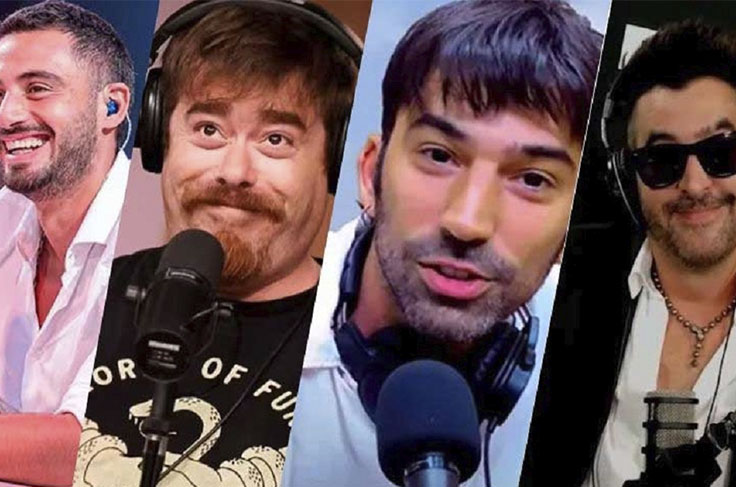

El crecimiento del streaming como plataforma de contenidos en vivo —dando paso a una “nueva forma de mirar”— fue creciendo paulatinamente a lo largo de los últimos años, pero el 2024 fue bisagra en la Argentina en cuanto a cantidad de personas que consumen contenidos en Youtube en vivo. Figuras que migran de los medios tradicionales al streaming y nuevos canales que se incorporan a la oferta ya existente. Todos estos fenómenos ocurrieron casi simultáneamente sobre una composición que se viene amasando ya desde hace tiempo con propuestas algunas más ligadas al entretenimiento como Luzu TV u Olga, y otras en canales con una fuerte impronta política como Gelatina, ideas desafiantes como Blender o contenidos relacionados al futbol como El Loco y el Cuerdo, entre otros.
¿Cómo sucedió que figuras consagradas de la TV o la radio como Alejandro Dolina, Ernesto Tenembaum, Angel de Brito o María O ‘Donell, entre otros, se sumaron a esta plataforma? ¿El streaming es lo mismo que la TV, pero a través de una aplicación?
Para responder estos interrogantes que se abren a partir de la irrupción del stream en el ecosistema mediático, desde NEXO quisimos conversar con personas están ligadas a esta plataforma. Diego Abatecola es el director general de Blender, un canal creado en 2023, que atravesó un importante crecimiento de la mano de figuras como Tomás Rebord o Alejandro Dolina. Esteban Cuevas, que es productor general de Eva TV, uno de los últimos canales de streaming que se crearon. Y Leonardo García, creador de EnDirecto Stream, una cuenta que se encarga de medir diariamente el “rating” de los canales de stream de la Argentina.
Canales o Identidades
“Creo que Blender tiene una búsqueda particular, identitaria, que la hace distinta al resto, que es un modelo más disruptivo, pero también una búsqueda desafiante. Desde expandir los límites, proponer cosas nuevas, incorporar la lógica de lo visual, la producción de contenidos on demand. Son todas cosas en las que hemos primereado y hemos empezado desde el principio a elaborarlas, que hoy se ven reflejadas en muchos lugares y creo que es algo bueno porque significa que habíamos dado en el clavo” apunta Diego Abatecola, o @robbiegol en las redes sociales, a la hora de responder respecto de las características del canal, cuyas figuras centrales provienen de lugares tan disimiles como el humor, en el caso de Guille Aquino, el periodismo policial a través de Mauro Szeta, o el entretenimiento digital del cual surgió el influencer Tomás Rebord.
Distinto es el caso de Eva TV, un canal creado desde el espacio político del peronismo, cuyos objetivos e intereses parecen estar alejados del resto ya desde su propio armado. En palabras de su productor general Esteban Cuevas, la idea de Eva TV fue la de “crear un espacio, un ambiente de comunicación donde puedan confluir diferentes ramas del peronismo, diferentes espacios, diferentes organizaciones, en un momento donde sabemos que crujen un poco las estructuras pensando en cómo se reordena el movimiento después de perder la elección el año pasado”.
La oferta de contenidos de Eva TV es variopinta ya que aborda diferentes temáticas como la ciencia, la seguridad o la economía desde la visión de referentes en esas áreas, pero a su vez también ofrece programas más descontracturados cuya propuesta tiene mas que ver con los intereses o las preocupaciones de un público que desea estar informado desde una perspectiva abiertamente peronista. En palabras de Esteban, Eva TV es “un espacio de articulación política y un espacio que funciona como una herramienta de comunicación que la estamos construyendo de a poquito”.
EnDirecto Stream nació durante 2023 prometiendo realizar un monitoreo diario de todos los canales de stream de lunes a viernes, con los datos actualizados de cada uno y con la premisa de tener “información esencial sobre el contenido de cada canal”.

Su creador Leonardo Garcia, indica que el proyecto nace a la par del auge de la industria del stream: “Durante la pandemia y a partir de la afluencia de distintos streamers y de primeros formatos de programas, empezamos a visualizar un incremento en la cantidad de audiencia y eso nos llevó a empezar con el proyecto aún más cuando en 2023 comienza a consolidarse la industria con el lanzamiento de Olga y Blender que se sumaba al posicionamiento que habían alcanzado Luzu como pionero y Gelatina por otro lado”, explica.
En el caso de los canales de streaming, la búsqueda de la audiencia se da a partir de un trabajo específico que busca linkear con el público a partir de una conexión identitaria, a partir de la construcción conjunta de ciertas contraseñas políticas, culturales o lingüísticas, entre tantas otras posibles, que son las que solidifican el vinculo del canal con su audiencia.
En relación a esto reflexiona Esteban de Eva TV, cuando expresa que el objetivo principal del canal no es únicamente sumar la mayor cantidad posible de viewers: “Nosotros en ese sentido tenemos que construir una audiencia que no es otra que las personas que se sienten parte del peronismo y se vinculan con esa identidad. Esto es, encontrar personas muy diversas, y nuestro rol es ser una herramienta que obviamente tiene como objetivo también algo ligado al poder, no te digo conducir porque eso es muy difícil, pero si dar un marco a la discusión de la coyuntura y de las políticas que toma el gobierno de Javier Milei”.